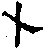

天界覺浪盛禪師語錄卷四
甲午住信州博山上堂問黃閣簾垂真音弗露紫羅帳合密信罔通如何得臣奉於君子歸就父師曰揭出妙高峰頂日爍開東土與西天曰金鍼暗度到即不點玉線曉穿點即不到如何得敲唱俱行正偏兼帶師曰少林巖上花含笑誰見風光特地新曰當機微笑窺見一斑依位無言猶虧全體如何得心髓相符門庭克紹師以手握拳曰還有窺此中機密者麼曰向上蒙師親指示格外明宗一句作麼生道師曰放收別有家風在曰恁麼則虎出渡河皆此日珠還合浦喜今朝師曰還須透過鐵壁銀山始得乃卓拄杖曰看看先老和尚騎了青金山王額虎雄視耽耽也還有衝風激電拼命直前不犯耳邊之缺能追足後之塵者麼試出來探我此藏身沒蹤跡之消息待我痛與一棒教你皮毛脫落血濺梵天此何等暢快惜乎一等沒眼腦漢將謂此老人最初把斷太危末後收來太急殊弗知不遇傾湫倒嶽之作那有掀天揭地之奇以故將此華亭釣竿子分付我雪關師兄聽他自弄當此時正是絲懸綠水浮定有無之意若有箇不貪香餌浪激三千一怒而飛搏風九萬者正好展開金翅劈破滄溟直取龍吞游戲自在去也何肯類盲龜跛鱉陷於昧昧自誇一隅以取笑於大方哉秪如全提正令一句作麼生道復卓杖曰臨風拈出吹毛利天下癡頑莫躲根。
上堂五更睡起手牽衣纔下床時腳踏地抬起頭來不見天幾多打失娘生鼻有箇不打失底卻又笑他君子時中小人無忌何待伐鼓考鐘引出這沒搨[打-丁+(天/韭)]老儂上此曲彔木指東畫西不勝魔魅迫得露柱奔忙燈籠[跳-兆+孛]跳惱亂無位真人向黃瓜茄子上挖肉作瘡苦無出氣何似懷州牛喫禾益州馬腹脹遍界覓醫人炙豬左膊上咄莫錯會好不見龐公老潑皮偏能不畏石頭路滑吸盡西江眼赫赤地咬殺了多少泥豬癩狗有如此活脫設使到我博山門下教他衣穿骨露無地藏身在何故不到洪爐親煆過爭得吹毛殺活人。
遠門柱公禪師訃音至上堂石耳峰寒撾毒鼓龍門浪暖躍春雷昂藏頭角擎霄漢洞上風生天地開天地開鳥飛兔走笑奇哉如何龍峰倒卓湖水飛埃黃梅石女夜生子仗劍橫行甚可猜諸仁者還知我姪遠門禪師底出處麼惜乎天機密用太煞神馳法道夜長方喜燈幢高樹祖庭秋晚俄驚喬木下摧血淚濺天痛遠山之花落悲風刮地傷法脈之心灰既爾斯人云亡豈非吾宗不幸雖然我姪自從吾廬山石耳發蹤而後得龍門雨兄之法出世於兩浙如祥麟威鳳文彩風流其座下之英才自濟濟其能振起祖燈如日月麗天此又豈邪雲逆蝕之所能掩滅乎此摘欺之話既已大行則千古之下無論智愚之人自不能昧此本心之良也吾初聞訃已哭不成聲特地舉揚又喜而無憾且道博山今日表彰底意旨作麼生滿棚弄鬼慚無地敢望丹霄一羽毛。
佛誕上堂乃卓拄杖曰會麼鐘未鳴鼓未響博山未出方丈有箇衲僧撩起便行好與三十棒為他無事生端鐘已鳴鼓已響博山已出方丈有箇衲僧便掀倒法座好與三十棒為他劍去刻舟正當恁麼時利害在那一處博山拄杖子呵呵大笑且道笑箇甚麼笑他悉達太子纔出母胎便不守本分稱我獨尊及至四十九年如螃蟹落鍋相似獨尊在甚麼處更笑他跛腳雲門被睦州拶斷泰時[車*度]轢鑽無出氣處要將一棒打他二千年前悉達太子與狗子喫自陷陷人恩怨誰雪博山恁麼舉還有與佛祖作主者麼出來喫博山痛棒若無少他一頓不得卓拄杖下座。
佛音禪人請上堂舉南陽忠國師於肅宗內殿見侍臣有善奕稱國手者帝問國師和尚亦善奕否國師曰老僧亦知奕但異於此帝問何謂國師曰世人只知以黑白相爭勝負老僧能用兩奩黑子奕還有能同老僧對手者麼侍臣大驚帝亦大笑杖人曰大小國師大似白拈賊既已明中打劫又且暗裏翻盤不免欺他大唐國裏無能敵手博山今日不著便特地拈破國師這一著黑子還有知落處者麼若有知得好與他三十棒若是不知緩緩自領出去。
端午上堂五月五日天中節毒鼓擊兮甘露滅風從虎也雲從龍笑看紅爐飛白雪到此幾括最微也須分明剖決六陽既升龍已亢此龍無首孰能降六陰欲兆虎將姤此虎無尾孰能揉有能降此龍揉此虎則玄黃交戰之機原始返終之故皆在此斡旋中所以風同聲而相應雲同氣而相求火就燥而上炎水流濕而下潤然非聖人之能慎獨以致中和何能使天地之氣化自位萬物之性命自育雖然此猶是治世邊事秪如格外全提又作麼生以杖敲空曰毒鼓擊也還有絕後重甦者麼復卓一下曰甘露滅也還有覺道頓成者麼若有出來與汝證明其或未然就中殺活無人見爭怪當機六不收。
上堂惜花春起早愛月夜眠遲此段風流事幾人可與知咄直饒恁麼去更須有西山擒白額東海捉蒼鱗底手眼始得不見甘贄行者到南泉設供請和尚念誦南泉白椎曰大眾為黧奴白牯念摩訶般若便歸方丈甘贄乃拂袖而行南泉見贄去乃於廚下打破鍋子看他這作略須鐵眼銅睛亦覷他不破獨我壽昌老祖拈曰拂袖便行鉤有餌鍋兒打破玉無瑕千古又誰能如此喝彩哉且道我博山門下還有恁麼人也無拈拄杖曰劈開華嶽參天色放出黃河動地聲。
乙未歸夢筆上堂舉僧問先夢筆和尚如何是佛師曰不誑汝僧曰莫便是否師曰汝誑他杖人曰金剛圈栗棘蓬閩王請齋次問師還帶得筆來也未師曰不是稽山繡管原非月裏兔毫大王既垂啟問山僧敢不通呈杖人曰通呈箇甚麼打鼓普請看又問如何是法王師曰不是夢筆家風杖人曰太孤峻生諸仁者還知此老法胍麼秪此便是雪峰老鱉鼻底毒氣彼曾三到投子九上洞山漆桶不快翻轉米盆卻於德山棒下打折驢腰猶不能點胸自肯及被巖頭驀地鏟削始得大叫鰲山成道便能迸出胸襟遮天蓋地門下傑出千五百人如雲門[車*度]轢鑽玄沙老凍膿輩要出此夢筆家風一頭地也未易在雖然如是千百年來又誰知彼落處杖人自壬子於此誓死掩關打破諸祖窠臼業方外四十餘年今日親歸得以全提向上綱宗揭示佛祖正眼使此慧命如火傳薪諸仁者各須知自己性命落處始有出身活路且如何是出身活路聻拈拄杖下座。
立觀濤首座上堂問荅竟乃舉拂子震聲曰看看昔日青原老祖親行此令直得曹溪簾捲鈯斧風生藥嶠吼出鐵牛威天皇拈起胡餅毒洞山睹影而寶鏡光寒雪嶺翻盆而木毬踏活於是三宗競秀獨新豐之曲調深長大好中興在夢筆之家風遠振立僧立法必須首出為人選佛選官所貴心空及第秪如今日立僧結制意旨作麼生道復揮拂子曰當陽揭露空王印放出吾宗千古機。
師誕辰上堂卓拄杖曰看看六十四年阿箇癡一條拄杖路千岐狂言狂事人難搆惱亂古今甚可疑能痛疑自有時習氣那堪搔著痒聞琴不禁舞斑衣乃舉衣曰喜此衣雙見披打鼓鼕鼕看是誰夢花石上寒梅發大好山中笑展眉。
丙申元旦付衣拂與奇首座上堂問吾師已擲煙波釣幾個金鱗上鉤來師曰高著眼曰忽遇擎頭帶角底來時作麼生師曰自有雲雷相送在曰恁麼則擲釣拋竿去也師曰更有英奇[卄/(隻*爪)]浪來以拂子打圓相曰元正啟祚拂端新多子峰前花朵春最喜金襴光奪日剎竿旛動笑偏親笑何親法王令旨誰能委夢筆家風已有人是甚人即此奇乎曾密囑今特當陽更印真乃召奇首座曰即此衣拂用付與汝以表吾宗傳續有在汝尚慎哉座禮拜曰和尚慈悲太過實是恩大難酬師復曰九苞瑞鳳來天際十影神駒度海涯。
崔公濤山明府率闔邑紳士為夢筆山主建選聖場請上堂卓拄杖曰會麼拄杖立處法界成感應道交佛祖現準上載而運化工傳多子而分慧燄若於此薦得則知指天指地唯我獨尊法位法幢隨方表豎家家門前火把別是格外風光人人腳下兒孫各自寰中驟步機緣有在啐啄同時今當覺場啟選聖之初正是東魯築杏壇之日喜神童於空中磨轉奇真秀於天上星旋夢協江令之筆花文占章元之翰撰全提向上統攝普門雙選宗風一賽兩彩秪如杖人特地興建以祈祝護一句作麼生道復卓拄杖曰指出好山宗子秀騎來玉象趁麒麟。
上堂夜半金烏帶雪飛家家門前有把火照破瞿曇黃面皮叫箇奇哉成箭垛此箭垛誰廓爾張三解使又無錢李四有錢不解使人平不語水平不流崔顥題詩在上頭一拳拳倒黃鶴樓莫嫌伎倆不如彼得優游處且優游。
上堂擊如意曰嚼碎鐵崑崙滿口達磨髓哺彼石女兒全賴此法乳賴法乳知幾許攤十石油麻於樹上百草弄影太煞分明指驀直路頭於臺山就中勘破儼然有在此有在誰痛快春風浪暖桃花飛一棹蘭江歌下載。
上堂問如何是心相體信師曰三尺杖子攪黃河曰如何是出入無難師曰夢中摸著摩訶石曰如是則祖父家私全歸掌握師曰何不問取拄杖子問三藏十二部千七百則公案皆是葛藤如何是不葛藤師便打曰恁麼就不是葛藤那師又打僧便喝師又打僧曰猶是葛藤師連打僧便翻觔斗出師乃卓拄杖曰百草頭邊識取老僧覿面如何話會鬧市叢裏撞著拄杖當機作麼支當到者裏有能衝流度刃八面旋機正好垂鉤於不疑之地撒網於無漏之天月裏煮油鐺風前吹玉笛又何妨千峰頂上獨足立腰纏十萬上揚州復卓拄杖下座。
烏龍深谷禪師請上堂杖頭撥剔千山曉笑看天風醉花鳥峰巒峭異不停機相逢相慰知多少堪笑睦州老拶出秦時[車*度]轢鑽重新韶國師滿目青山灼然是曹源一滴不斷知不知好向玉泉澈底深深處乘此風雷變化飛。
靈明禪人請上堂金牛呼喫飯大地沒饑人鳥窠吹布毛天下無佛法月裏塔高十二層天上星躔八百杪山之南江之北者些茄子瓠兒水土節氣力尚未充卻有多少人眼吧吧地望著你在。
丁酉住杭州皋亭崇先寺上堂拈香白椎竟喝一喝拈起拄杖曰看看新長老拄杖子全提正令也三世諸佛祖齊立下風各各鼻孔被拄杖穿卻直得出身也由我吐氣也由我佛祖三昧杖子盡知杖子三昧佛祖不知正以此無自欺三昧能使日月自麗乎天山海自列乎地春自開花秋自落葉鳥自飛空魚自躍水凡自忘情聖自離解佛祖由斯而生邪魔由是而正更須撥轉向上關捩透出教外別傳始知剎竿倒而千聖迷蹤骨髓空而二株永秀風旛不動而心開歸根無口而體露廬陵米價震旦驚聲鈯斧風規神機莫測乃至新豐一派法乳橫流崛起皋亭開宗歇祖初喫一掌血濺梵天歷世面門痛痕猶在迄我壽昌先祖突出好山東苑先師奇生武曲及今杖人主此祖庭重標宗旨還有承此無欺三昧者麼卓拄杖曰指來皋嶽千峰秀放出曹源萬派清。
中秋上堂千峰秋色遠撩人玉笛橫吹別調新桂子庭前花正發月明簾外笑誰親今值中秋月明諸人各剔眉毛猛著精彩還見我丹霞淳祖示眾麼日照孤峰翠月臨溪水寒祖師言外旨莫向寸心安彼時獨我歇祖聞之大叫曰此回瞞了上座不得也汝諸人直須到恁麼痛快始得咦當央得月須忘指黃鶴風高有大機。
愚菴和尚至引座上堂卓拄杖曰看看一棹湖中發千峰引領來火燒衣帶急不禁笑奇哉大眾各須剔起眉毛猛著精彩好聽杖人大驚小怪與汝說一奇特何則杖人四十年來以一霜藤橫行海嶽於刀兵慘殺天翻地覆中求個真傷心人不可得真快心人不可得而心伏口伏之人又豈易得哉自我千百年上祖宗服毒不死者別遺下一種丹頭作千古補偏救弊之毒藥使於此宗得皮者毒殺他皮得肉者毒殺他肉得骨者毒殺他骨得髓者毒殺他髓得心者毒殺他心正要他自有超脫活計以故留難於今獨有生死同條老弟兄相與感傷不徹痛快不徹如冤家廝結斧斫不開入佛入魔縱橫三墮若非毒毒相激安能與我傲睨於古今上下哉適此特來皋亭於一掌開宗快活不徹底歇祖無縫塔前燒此一瓣香用酬毒乳之恩老祖已自破顏一笑汝等何幸落此沒量大人局內即我亦攀躋不及寧論汝等拼得命拼不得命搆得上搆不得上直須盡行拶入這愚菴老漢大毒海中翻騰一上翻騰得去許汝是個哮吼獅兒使祖父俱盡翻騰不去已在他金剛圈裏終有透露汝等但隨我禮請陞堂自有一痛快打發汝也復卓拄杖下座。
開罏上堂當陽拋出抬眸鷂過新羅直下承當正好驢腰打折佛祖無湊泊處就中誰得安排特地奮起英奇不免全身拶入所以峰巒峭異鶴不停機靈木迢然鳳無依倚於此薦得新豐老子玄中別唱密用全提也須向崇先拄杖頭有個轉身吐氣始得還會麼鐵額銅頭須著力大家踏轉上頭關。
嚴三求居士請上堂文殊眉稜挂劍慣於落草橫身淨名舌本藏雷善向晴空著橛坐斷金鎖劈破玄關月映蘆花飛鷺春潛枯木龍吟十五年前靈谷杖痕刺骨十五年後皋亭錐影驚心當道青松空手把鋤曷種碑文白字寒蟲禦木爭刊秪這些子淆訛便是嚴三求昔年喫棒尿床底勾當今偕胞弟於崇先增廬陵米價出甘贄藥金杖人一一按過也要他親自拳倒黃鶴樓踢翻鸚鵡洲方許他北斗藏身於此入作喝一喝卓拄杖下座。
訪愚菴和尚於古報恩寺請上堂櫂引桐溪獵曉霜山光痕我影低昂仰山久不見臨濟瘦卻法身三寸長正當恁麼時還有能見杖人與我愚菴法兄底眉毛廝結處麼雖則同條共命各自步趨及彼超軼絕塵仍自瞠乎其後即其宗兼眾妙奇出異常一棒撩空八面受敵直使他西天東土者一隊沒巴鼻漢當機也進不得前退不得後況其餘乎饒彼五祖演欲形容五宗之密如逆耳聞雷紅旗閃爍斷碑橫古路語亦不過彷彿其一斑我又何能刻畫無鹽唐突西子也哉雖然今日客聽主裁如何得不方命去莫怪馳書不到家竊恐巡人還犯夜。
上堂一句最淆訛當機殺活多剎竿曾倒卻千聖盡投戈忽逢無鼻漢把臂入煙蘿山海坦然平敲冰來煮茶或長嘯或高歌就裏風流誰得似未嫌伎倆不如他。
上堂巢知風穴知雨天機幻出誰為主嶺梅綻玉占先春午馬凌空看子鼠百尺竿頭五兩輕四升斗裏呼相杵卻有彰禪客偕友來於此助揚禪悅以乞法乳杖人點汝頭點汝尾者風流須自許切忌向明眼人前錯亂舉。
武林諸縉紳請上堂舉如意曰看八字不須撇十字未添畫驀劄兩相交天機成造化復以如意畫曰秪如這個是甚麼老聃執大象而天下往芻狗是民仲尼各於黨而斯知仁居易觀過瞿曇拈出勾引傍嗤倒卻剎竿撩天索價鳥窠布毛逐空中鴆影橫飛大隨草鞋驚巖下靈龜爆卦真天子不假堯舜敕文大英雄肯賣陳年滯貨曹山按劍八面風生龐老吸江萬機俱墮大藏切腳缽羅娘五宗不傳精骨挫逗到今日物換星移江流愈下卻幸武林諸公具擇法眼能鑒千古神奸重開雙選宗社且道斬新條令一句又作麼生不見道驀劄兩相交天機成造化。
永覺和尚訃音至上堂山蒼蒼水茫茫藤林荒滯肌尪上不見天下不見地捏斷咽喉何處出氣咄咄咄鼓山法叔永和尚踏翻盤子也還有見秋清月轉霜輪河淡斗垂夜柄默默全提正令者麼此老叔初於壽昌師翁處得旨後於博山大師納戒深得門庭堂與之密及歸隱荷山著書自娛偶受知於瓶窯聞大師付以雲棲戒法遂推揚於溫陵出世繼而主真寂法席大振宗風光搖海嶽及山僧主鼓山聞師退居金華特與護法延歸山中不動聲光坐成寶所摩天峭異鶴不停機年登八十如太陽玄之高致且喜頂相皮鞋不更求人今者訃音初至使我換手搥胸哀泣不已正以壽昌一枝法燄光爍八方忽而撲滅直得天昏地暗魔魅橫行及讀歸真記始知正法眼已付囑霈首座乃翻然大喜一枝聖箭射透重關一棒霖盆發生大地使異苗靈根而深密也山僧忝在法乳相關特以表揚復綴一偈霜飛葉落金風冷屴崱峰頭慧日頹莫道法幢今已滅好看鐵樹正花開。
觀星日圓戒上堂白雲向寒崖而斷明月隨夜船而歸曉起一聲漁唱蘆花宿鷺驚飛無位真人向汝等面門出入無蹤跡可得纔眨上眉毛已打失眼睛也那堪于雪山冷冰冰處半夜大叫觀星悟道賺殺了多少演若多迷頭認影至今無能為無位真人雪屈者杖人不惜饒舌直與道破汝等一日不作一日不食既已披披搭搭缽盂口朝天草鞋鼻著地下雨在家彈指穆力陵天晴托缽底托缽搬柴底搬柴切莫辜負好。
上堂懷牛喫禾益馬脹杜順法身沒伎倆卻笑潑皮皓布褌葡萄棚倒誇向上這向上甚無狀大似杖人住皋亭臥月眠雲卻難禁古殿子欲隨風頹墮不免煩知事行人撐撐拄拄欲還舊觀分疏那法身更向上雖然功不虛施作麼生慰藉他好摧殘枯木方新秀且喜寒梅春正歸。
師誕日上堂真歇老祖去我五百年望我於無陰陽地上建大光幢壽昌先祖去我四十年望我於無影樹頭開花結果東苑先師去我廿八年望我於六毒峰前掀翻五乳爭奈這孟八郎子孫以一條血滴滴拄杖子火馳水突冒命忘危坐不溫席行不辭疲踏殘芳草斷送落花黃鶴樓前倩秀才次不成崔顥底一韻曹山井畔騎驢子覷不見法身莖眉凜良久邈真溯無言得髓誰堪振向上深微自應續主中尊貴逗到於今已六十六白接得幾枚沒勾挂底嗣子東穿西汲南搯北撈大似錢貫井索木杓笊籬何足塞祖宗之厚望慰慧命之傳持甚愧馬齒徒長雞肋無力醍醐毒藥快意傷心滯貨與此遺艱都盧皆屬分內是何初度受此祝辭新豐之曲調既高藥嶠之鼓笛猶渺朝無猿摘之金果晚乏鳳啣之玉花如此荒疏實難酬酢然隨時應節也須吐露一句且道吐露底又作麼生法界不容吾自委敢推樓至與威音。
立春上堂昨日年正今立春雙分錦縫露天真夜明簾外無私照金殿光含化育新秪這東皇秉令元首尊親三陽交泰天下歸仁木馬嘶開空劫夢泥牛踏山故園春正好門前扶起風旛吹動海嶽堂上唱來米價喜徹高深阿誰不承尊貴之力何地不樂太平之音惟諸仁者各自珍重。
燈節解制上堂制曾何結今何解可有點胸自肯無卻好連宵風雨息佇看銀浪湧芙蕖卻訝蒼天助興還教燈月交輝半夜摸著枕頭突出通身手眼五更吹來鼓角驚生漆桶爪牙明不越戶暗不棲巢赤腳上刀山超生活計橫身遊毒海出死神機寰中敕旨密在九重塞外威風權歸三尺更須知闡提行狀異類淆訛始許你入作不見道金鏃慣調能敵勝鐵鞭多力孰能欺。
諸薦紳請上堂驀劄心交格外微剎竿扶起飲光機油鐺月裏親煎煮北斗南辰驚罕希秪這皋亭春暖梅萼香霏丹霄鳳舞碧海龍飛是誰撥轉關捩疾使草偃風威主明者全身拶入作倡者把手同歸不必指庭前花夢何待訊壁上僧儀但得髻珠迥露自能錦縫光披骰子擲下滿盤紅香煙迸破一爐灰到者裏大開笑口底你道孤負阿誰。
普門大士誕辰張方伯范兵憲李榷關劉給諫暨諸薦紳護法請於報國院上堂五更欲覺忽聞鐘夢裏風光一擊空醒起六根齊感應普門何處不圓通諸大士還見過去正法明如來於現前出生為大悲觀世音菩薩者麼看看天際日上月下檻前柳綠桃紅水流濕而火就燥風從虎而雲隨龍正以聖作而物睹寂感而道通聖人具足凡夫法聖人不知春風吹起百花枝凡夫具足聖人法凡夫不會荊山璞玉自藏粹感之時義大矣哉且作麼生慶讚聻千聖不傳真慧命薪薪麗火作燈宗。
上堂丹霞燒木佛累他院主墮眉鬚翠微供應真惹彼懷牛脹肚腹到者裏須知有驅耕奪食格外全提拈山門於佛殿裏拈佛殿於燈籠上呵呵呵何如我皋亭春光明媚桃李錦披靈雲與劍客相逢驀劄渾成一笑且道笑個甚麼漁郎漫把竿絲弄縱浪金鱗別有機。
上堂以能分人已愈有火之傳燈以能出生已愈多種之佈穀乃於左邊拍曰向者裏與諸人分燈也於右邊拍曰向者裏與諸人出穀也若於此中薦得則能與普賢乘大願王出入藏身三昧撒漫天絲網設遍地鉤錐使人人就路還家處處轉身歸父其或未然夾路桃花風雨後馬蹄何處避殘紅。
中元上堂春生夏長是化毋底勤勞秋收冬藏是化毋底儉約好於此知原始返終變生化死之故目連尊者之母既能生聖子如何自己無出身路卻向鬼窟裏作活計尊者於靈山會上稱神通第一如何卻假十方僧伽作蘭盆會始能度親莫是示異方便從井救人麼汝等諸人赤肉團上有無始化毋向六根門頭放光動地開秘密門示忠孝行如何不知本始顛倒行事以自淪墜若於此薦得便能穿卻瞿曇與十方鼻孔不則汝等鼻孔被我拄杖子穿卻向天蒼蒼地茫茫去也會麼鴛鴦繡出自金針。
來雲現公禪師掃歇祖塔請上堂雙輪合壁泥牛入海如神五曜經天石馬迴途自妙微雲淡河漢秋露滴梧桐路逢達道人不將語默對若有箇漢向這裏發得一笑許他親見歇祖八字打開別施手眼衣被萬物乳育群英使箇箇遮天蓋地去還會麼夜排月戶清光遠山拭秋稜秀色多。
立僧上堂乃喝曰看沉毛江上波湧鐵船忽爾浮來沒底藍裏風動玉花驀地笑開瞿曇漏失消息達磨脫落皮鞋是誰於此扶豎佛祖綱宗表正人天眼目振大機而展大用擢群秀而拔群才神珠影吞海嶽寶劍飛拂塵埃不勞敲骨出髓自能地轉天迴且道今日皋亭立僧底節文在甚麼處欲親拶入遮那藏好見文殊腦後腮。
結制上堂十字街頭結制唯有石橛子自敢承當急水灘上白椎秪許竹篙兒全機活脫杖人恁麼舉忽有箇出來捲卻席子也好與三十棒且道是賞伊罰伊簡點得出黃頭碧眼剜肉成瘡簡點不出白牯黧奴開眼作夢秪如今日與眾造箇款端又作麼生巨靈抬手無多子擘破華山千萬重。
青原專使送衲衣至上堂曹溪得髓超超豎拂青原廬米吹毛凜凜全提震旦師承各稟誰破天荒敲唱同時獨標宗眼在昔行倒竿之令方今逗微笑之機怪習氣以舞琴聲奇金襴而佇雞足秪如天上無彌勒地下無彌勒直得雲巖禪床震動洞山遍體汗流時又作麼生閒拈拄杖風前立看鶴飛鳴上九皋。
壽昌南嶽兩專使至上堂先聖曰寄諸空言不如行諸實事與其舉古何似驗今秪如壽昌兩長老之交代亦可法也還知竺菴成公之行履麼獨龍擺尾風雷迅雙鳳啣珠氣象新扶起祖竿不恃成功汗馬呼來弟喏能催躍浪神鱗到處好山春色秀隨方相見倍相親橫拈鈯斧歸衡嶽誰識石頭滑殺人如此已是一擲骰子滿盤紅何待遙觀添喝彩況此原是渠之出身處也須有俊快衲僧竿木隨身者去探他一噓兩噓或如豹披霧而毛文象聞雷而牙燦不使古祖宗猷益遠大乎雖然更須知光雪存公之出處石耳凌空鏟佛殿前之夙草鼓峰放箭騎聖僧上之危肩此子天然踏翻釣艇直得通身頑爛於濃滴滴處遍著艾焦始悟天界杖下骨疼掘起向大好山無縫影裏叫屈撞著同門冤對特地鈍置恨更難消飛符皋鶴亭前惹杖人一笑且道笑箇甚麼疾風知勁卉傲雪見新條。
汪本和比部施材倡造大殿請上堂拈拄杖曰向上不傳腳底踏通諸聖路獨尊在我杖頭點發大千機所以從門入者不是家珍直須向自己胸中迸出始能遮天蓋地到此也須知者箇消息始得碧眼胡留嵩山半片影石震旦敷五葉之花陳亞仙創曹溪一座祖庭萬世傳二株之命以故青原垂足南嶽追風洞水逆流霞峰喫掌宋高宗御龍而聽法真歇祖奉詔以開山寶殿瓊樓玅麗參於睹史祥麟瑞鳳聲光協自中孚五百年隱見有時千古下心燈不夜今當恢復首倡遇人拈莖草而梵剎重新添九籌而洪鈞盡轉碑文刊白字主明更有亞仙當道種青松鳴皋自來靈鶴秪這便是天都汪比部剔起鬚眉大舒手眼自堪取足何待三千里外賣布單索我一笑而後能搆去杖人只合率奇越諸子於佛殿裏燒香念曩謨三滿多任彼船來陸來風動旛動向山門前合掌讚曰異哉希有豈非我顯孝中興一大奇特公案哉復卓杖下座。
馮崑石居士倡社請上堂不與萬法為侶一口吸盡西江且喜龍師火帝鳥官人皇乃能化被草木賴及萬方鼻孔生來雄面目移他腦後不昂藏青州衫子俄穿破逗出錦繡銀香囊互換風流非易識引商刻羽謾歌揚驀然撞著麻衣道者於塵埃中偏能物色這箇訝郎當卻大叫非常正是尋龍得真胍於彼草蛇灰線又如相馬取神駿而略牝牡驪黃請放眼光試擇今之馮何似古之龐。
上堂空中著點文彩已彰句裏藏鋒殺活不測南陽忠國師無端向天津橋上弄猢孫卻被大耳三藏迫得點魚上竹竿未免勘破落處何如艮山門曹大郎一味本色入荒田不揀信手拈來草到此社伙與可禪隨嚫下[飢-几+追]子掀髯笑嘻嘻他家自有通人愛應時納祐無不宜。
茂安領眾尼請上堂料峭鋒芒五臺會上雲蒸飯軒渠絕倒水牯欄邊雪散花老溈山擊來石火之機劉鐵磨閃出電光之眼不是天然玅協安能啐啄同時莫怪者裏斷岸把竿水寒魚少或到春風浪暖振鬣而起者應不減在試為拈出相見不揚眉君東我自西紅霞穿碧海白日繞須彌。
玅詮言法孫請上堂疏山手握木蛇自命是曹家女吞吐八面鋒機肯諾不得全許似者等聱頭禪若非推倒有句無句的枯樁子徹見他笑裏有刀安能向猛虎口中奪雀兒饑鷹爪下爭兔子我這裏潦倒隨時跛跛挈挈無暇縛鬼左搓芒繩且喜一掌峰前尚有尋宗問祖者來此酌水獻花亦可慰在。
臘八曹華國居士請上堂寒則普天寒熱則匝地熱刺眼不但是星透骨非止是雪胡為乎悉達太子獨於此夜大叫悟徹況此世人逆之則嗔順之則悅饑則思餐渴則思啜按之一例皆然何有迷悟之別秪如曹華公得甚消息特來飯僧問多子社如何能結杖人只令首座引到大雄殿上選佛堂中巡視一回乃大喜點首曰且莫洩且莫洩我已得不言之秘訣夫如是則古今又各自有親切。
天界覺浪盛禪師語錄卷四